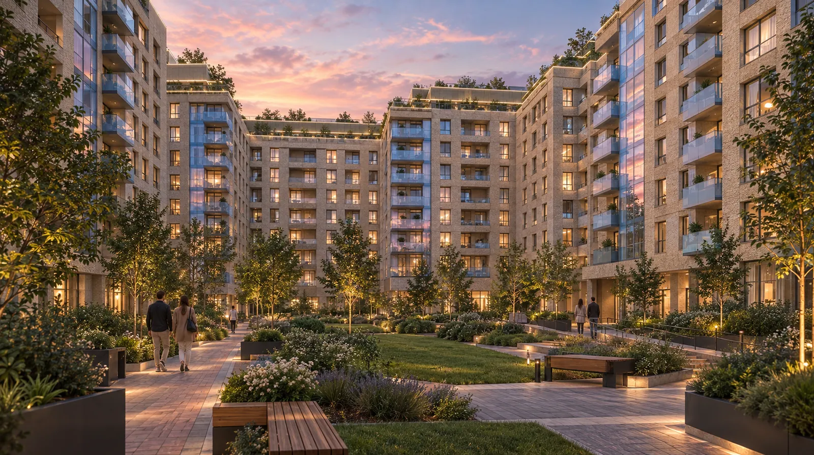
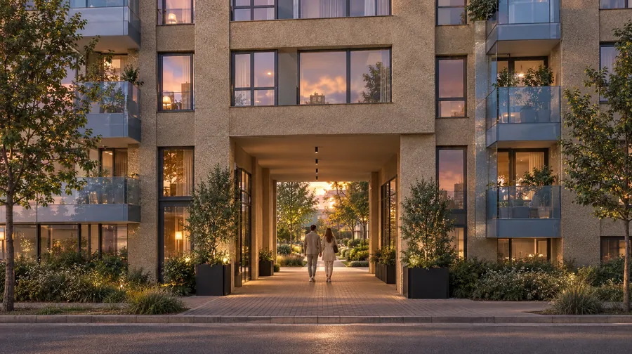

Blue Danube Promenade · Zemun, Beograd
Vaš grad u gradu.
Osam lamela oko zajedničkog dvorišta. Domovi, poslovni prostori i promenada — na jednom mestu.
Kad padne veče
Prozori se pale jedan po jedan. Iza svakog — nečiji dom i nečija priča.
Jutro
Jutro počinje kod kuće — uz doručak i sunce kroz veliki prozor.
Dan
Kafa, kupovina i obaveze — u prizemlju, par koraka od vrata.
Planirani poslovni prostori u prizemlju kompleksa.
Veče
Veče u dvorištu i na promenadi, sa prijateljima.
Blue Danube Promenade
Sve ovo — na jednoj adresi.
Osam lamela, zajedničko dvorište i poslovni prostori u prizemlju.
U fokusu prodajeLamele 5 i 6 · Stanovi do 40 m²
Pogledajte stanove- Jutro
- Dan
- Veče
Vizualizacija na osnovu 3D modela
Preskoči uvod01 Kvart
Ceo kvart iz svakog ugla
Osam lamela spojeno je u zatvoreni gradski blok oko zajedničkog dvorišta, na obodu naselja Altina u Zemunu.
Kompleks se nalazi na obodu naselja Altina, u opštini Zemun. Okružuju ga magistrala T6, auto-put Beograd – Novi Sad i ulice S126 i S133 – Ratarski put.
U neposrednoj blizini nalazi se Regionalni poštanski centar Pošte Srbije.
Unutrašnje dvorište je polu-privatno i namenjeno pre svega stanarima.
Do njega se stiže kroz tri pešačka pasaža u nivou prizemlja – između lamela 1–2, 2–3 i 7–8.
93 poslovna prostora u prizemlju lamela i u aneksu.
Lokali za trgovinu i usluge otvoreni su ka okolnim ulicama i ka dvorištu, a da pritom ne remete mir unutrašnje pešačke zone.
- 1 291stan, 33–158 m²
- 93poslovna prostora
- 1 605parking mesta
- 40,4 %parcele – slobodne i zelene površine
Model iz FBX-a sa delom originalnih tekstura; materijali i osvetljenje prilagođeni su pregledaču, a oznake lamela, dvorišta i prizemlja su približne. Šema okruženja je orijentaciona. Satelitski snimak: Esri, Maxar, Earthstar Geographics. Okolne zgrade: © OpenStreetMap contributors, visine su procenjene.
02 Arhitektura
P + 9 + Ps
Prizemlje, devet spratova i povučeni sprat. Ispod zgrade su četiri podzemne etaže.
- Visina venca
- ≈ 31 m
- Maksimalna visina
- 36,5 m
- Spratna visina, od poda do poda
- 2,90 m
Čista forma pravilnog kubusa, ravni krovovi bez streha. Fasade kombinuju dekorativne maltere različitih nijansi, crnu bravariju i staklo, a lođe su usečene u fasadna platna i krovne vence. Kalkanski zidovi lamela tretirani su kao uređeni deo fasade, sa otvorima.


03 Prizemlje
93 poslovna prostora
Lokali za trgovinu i usluge otvoreni su ka okolnim ulicama i ka dvorištu, a da pritom ne remete mir unutrašnje pešačke zone. Na vizualizaciji – restorani i kafei.
Vizualizacije su preliminarne; večernja i dnevna verzija prikazane su iz različitih uglova.
04 Dvorište
Dvorište unutar bloka – za šetnju i odmor

Popločani platoi ispred ulaza u lamele povezani su pešačkim stazama u blagom nagibu. Između lamela su zelene površine različitih nivoa privatnosti.
Za popločanje su predviđeni opeka i kamene lajsne, a mobilijar čine crne metalne žardinjere i drvene klupe. Slobodne i zelene površine zauzimaju 40,4 % parcele.


Dnevne zone stanova izlaze na lođe ili terase.
Pogled iz pojedinačnog stana zavisi od lamele i sprata – detalji su u pripremi.
05 Izbor stanova
Stanovi do 40 m² u lamelama 5 i 6
U fokusu prodaje su lamele 5 i 6. Izdvojili smo 18 stanova do 40 m², od 1. do 10. sprata – za svaki je dostupan originalni list sa osnovom.
18 stanova
Nema stanova za izabrane filtere
Promenite lamelu, sprat, površinu ili orijentaciju – ili poništite sve filtere.
- Cene
- u pripremi
- Status stanova
- biće objavljen naknadno
- Rokovi
- u pripremi
Prikazani su stanovi do 40 m² u lamelama 5 i 6 (lamela 5: 1.–9. sprat, lamela 6: 2.–10. sprat). Sprat, površine i orijentacija preuzeti su sa originalnih listova; isečci osnova napravljeni su sa istih listova, bez izmena crteža.
06 Zahtev
Zatražite prezentaciju
Ostavite kontakt – poslaćemo vam materijale o projektu čim budu spremni i rado ćemo odgovoriti na vaša pitanja.
Zahtev je primljen
Demo režim: forma nije povezana sa CRM-om, podaci nisu nigde poslati.